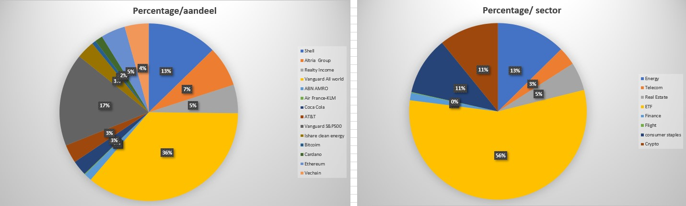

Mijn naam is Alan Osefia, en ik ben geboren op 20 april 2001. Als ik mezelf zou moeten karakteriseren zou ik mezelf op de een schaal van introvert en extrovert in het midden plaatsten. De reden dat ik mezelf in het midden plaats komt omdat het afhankelijk is van de situatie waarin ik me bevind. Als ik bijvoorbeeld op een feestje ben kan ik heel erg op mezelf zijn, maar ik kan ook met verschillende mensen contact leggen. Dit is allemaal afhankelijk van mijn stemming. Soms kom ik verlegen over bij mensen, maar aan de andere kant vind ik het heel leuk om presentaties te geven aan groepen mensen.
Tijdens het eerste semester ben ik erachter gekomen dat ik zonder probleem een aantal uren achter elkaar aan huiswerk kan besteden. Op het VMBO en MBO heb ik dat namelijk nooit echt moeten doen ik haalde namelijk al mijn vakken wel zonder echt veel moeite ervoor te moeten doen. Ik ben er gelukkig optijd achter gekomen dat dit niet zo kan doorgaan op het HBO, hier gaat niemand achter je aanzitten om opdrachten te maken. Het grootste verschil tussen MBO en HBO zijn de lessen. Tijdens het MBO hoefde ik alleen de informatie te horen tijdens de les en kon ik de toetsen maken, alhoewel ik nog geen toetsen heb gehad neem ik het risico niet om geen huiswerk te maken.
Voor Business modeling moet ik samen met een groep een bedrijf leren kennen om vervolgens een bepaald proces te gaan verbeteren voor hun. Aangezien dit een groepsproject is, is communicatie key om het te maken product zo goed mogelijk te realiseren. Mijn voornaamste rol binnen het project is het contact onderhouden met de HR-manager. Dit is soms wel een beetje moeizaam om te doen, omdat de beste man een druk schema heeft. Toch probeer ik zo beleeft mogelijk toch achter hem aan te zitten met bepaalde dingen. Ook heb ik de gehele lay-out van het verslag verandert. Ik vond de lay-out er niet mooi uit vond zien, en voor mij is het belangrijk dat het verslag inhoudelijk niet alleen juist is, maar ook dat het er vanaf de buiten kant esthetisch uit ziet.
Mijn projectgroep vindt dat ik goed communiceer met hun. Ik vermeld elk contact dat ik heb met ons contactpersoon binnen het bedrijf aan de groep. Ook tijdens een les van Persoonlijke ontwikkeling werd dit tegen mij gezegd toen we elkaar feedback moesten geven. Een beter moment om mijn mening over mijn communicatie skills te beargumenteren was toen we op bezoek gingen bij het bedrijf voor een interview. Toen we moesten beslissen wie het interview ging houden werd ik vrijwel meteen gekozen om het te doen. Mijn projectgroep had mij gekozen, omdat ik regelmatig vragen stel tijdens de colleges.
Momteel heb ik 4 vakken die ik volg. Als ik deze vakken op volgorde zou moeten zetten van favoriet tot minst favoriet zou het er zo uit zien: Database> Front-end development >Business modeling>Persoonlijke ontwikkeling Ik kwam eigenlijk naar de opleiding om de business kant op te gaan, over een paar jaar zou ik graag een eigen onderneming willen opstarten en runnen. In alle eerlijkheid had ik verder geen idee wat ik echt moest verwachten en wat ICT allemaal in zou houden. Een vak zoals database zou mij heel saai lijken als ik het zo op You Tube zou zien, toch is het mijn favorieten vak geworden. Dit komt voornamelijk doordat je veel moet na denken en logisch moet na denken om vraagstukken te kunnen beantwoorden. Tijdens mijn opleiding in jaar 3 en 4 zou ik graag stage willen lopen bij een softwarebedrijf en/of consultingsbureau. Dit zijn de twee richtingen die mij het meest interesseren om later in verder de specialiseren.
Mijn motivatie is vooral om succesvol te worden in het gene wat ik doe. Ik groei momenteel op in een ondernemerskring. Mijn stiefvader is semi met pensioen op 50-jarige leeftijd dmv ondernemen. Een buurman heeft een aanbod op zijn IT-bedrijf gekregen waardoor hij ook met pensioen kan gaan op 35-jarige leeftijd. Zo kan ik nog doorgaan met kennissen die vroegtijdig met pensioen zijn en/of kunnen gaan. Begrijp mij niet verkeerd ik ben dol op werken het liefst zou ik gisteren al eindexamen gedaan hebben op school om vandaag te gaan werken in de IT. Maar het gaat om de vrijheid te kunnen hebben om te zeggen ik mag werken ik hoef het niet te doen, om FIRE te zijn (Financial Independence, Retire Early). Het kan natuurlijk een gevangenis worden dat is de andere kant stress, overspannen, hoge werkdruk, depressie en zelfs failliet gaan voordat je FIRE BENT.
De reden dat ik deze subtitel: "Wat houd mij bezig?" noem en niet hobby's komt omdat ik niet echt hobby's heb. Ik luister veel muziek, ik game heel soms en kijk ik wel eens een serie, maar verder ben ik vooral bezig met mijn toekomst. Tijdens de piek van de corona crisis was ik vooral bezig met werken, ik werkte 6 dagen in de week in een restaurant. Het restaurant waar ik werk heet Da gigi het is een Italiaans restaurant. De eigenaar van dit restaurant is tevens ook mijn vriendin. Verder ben ik bezig met mijn geld te beleggen over verschillende aandelen en crytomunten.
